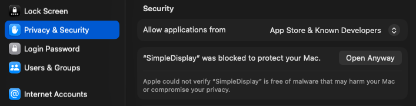

A lightweight, open-source macOS menu bar app for managing displays and creating virtual monitors.
Simple display management that lives in your menu bar and stays out of the way.
Toggle monitors on and off without unplugging them. Handles edge cases like disabling the main display safely.
Create virtual monitors with custom resolutions and device presets — iPhone, iPad, Mac, TV, and more.
Change your primary monitor from the menu bar. Menu bar and dock reposition automatically.
Create Retina virtual displays. HiDPI and standard modes properly grouped and labeled.
Automatically handles display state across sleep cycles. Your setup is restored without manual intervention.
Prevents the ColorSync deadlock that occurs with identical monitors on macOS Sequoia.
macOS limits resolution when no physical monitor is connected. SimpleDisplay creates virtual displays that the system treats as real screens — perfect for remote access, testing, and headless setups.
Full resolution over VNC, Screen Sharing, Parsec, AnyDesk, or TeamViewer.
Run Mac minis and Mac Studios with no monitor attached at any resolution.
Test layouts at specific device resolutions without extra hardware.
Keep apps running on a virtual display while working on your main screen.
SimpleDisplay uses macOS private frameworks to give you control that the built-in settings don't offer.
Uses Apple's private CGVirtualDisplay API to create displays that appear as real monitors to macOS — useful for screen sharing specific resolutions, testing responsive layouts, or keeping apps running on a "hidden" screen.
Mirrors it to another active display via CGConfigureDisplayMirrorOfDisplay, effectively turning it off. This is reversed by removing the mirror relationship.
These capabilities aren't available through public frameworks. SimpleDisplay can't be distributed on the Mac App Store, but it can do things no App Store app can.
Download the DMG or build from source — your choice.
Grab the latest DMG from GitHub Releases. Open it, drag to Applications, and you're done.
First launch
macOS will block the app since it isn't notarized. Go to System Settings → Privacy & Security and click Open Anyway. This only needs to be done once.

Clone the repo and build with a single command. Requires Xcode Command Line Tools.
SimpleDisplay uses private Apple APIs. Here's what that means in practice.
Cannot be distributed on the Mac App Store — private APIs are not allowed by Apple's review guidelines.
Virtual display refresh rate is capped at 60 Hz (API limitation).
Display identification uses names, so two identical monitors may not be distinguishable in all scenarios.
The CGVirtualDisplay API may change or be removed in future macOS versions.
SimpleDisplay is free software. Built with insights from the macOS display management community, including BetterDisplay, DeskPad, and displayplacer. Contributions of all kinds are welcome.